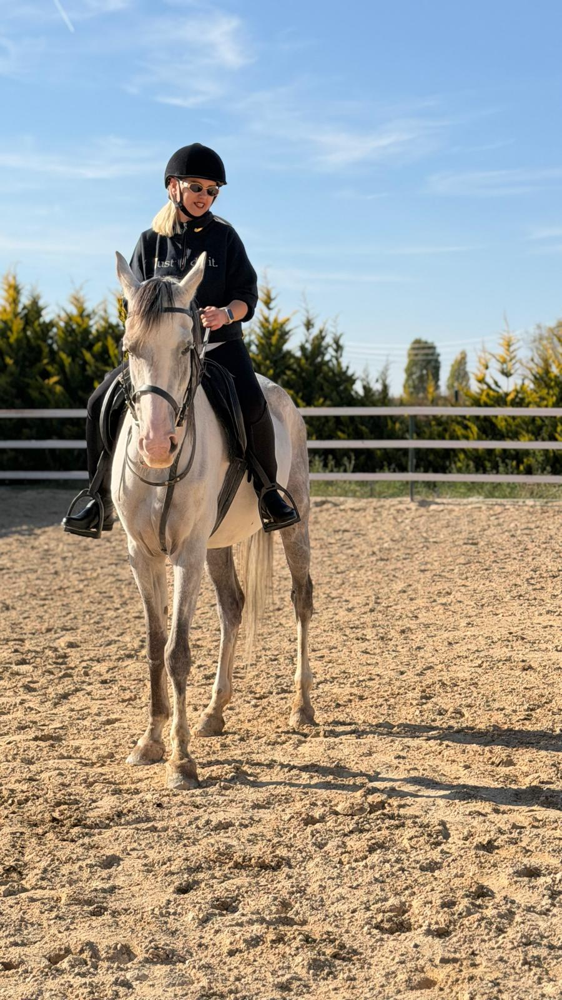

Senior Product Manager / Product Manager
GEN İLAÇ · Ekim 2017 – Haziran 2026
Marka stratejisi, ürün konumlandırma, pazar analizi, sağlık profesyonelleriyle bilimsel iş birlikleri ve çapraz fonksiyonel ekip koordinasyonu.
SCIENCE · STRATEGY · LIFE
Akademik birikimim, profesyonel yolculuğum ve hayatın farklı alanlarına duyduğum merak.
Hikâyemi keşfet →
01 / ABOUT
Biyoloji ve temel onkoloji alanındaki akademik geçmişim, dünyaya bakış açımın temelini oluşturuyor. Bilimsel merakımı, ilaç sektöründe edindiğim on yılı aşkın profesyonel deneyimle birleştirerek araştırmadan stratejiye uzanan bir yolculuk geliştirdim.
Kariyerim boyunca nadir hastalıklar, nöroloji ve onkoloji alanlarında çalıştım. Saha deneyiminden ürün yönetimine uzanan bu süreçte bilimsel bilgiyi, stratejik düşünceyi ve insan ilişkilerini bir araya getirmeyi önemsedim.
Ancak hayat benim için yalnızca mesleki hedeflerden ibaret değil. Spor, binicilik, kite sörf, seyahat, kitaplar ve yeni yerler keşfetmek hayatımın önemli parçaları. Hareket halinde olmak, farklı kültürlerle tanışmak ve yeni şeyler öğrenmek merakımı canlı tutuyor, bana farklı bakış açıları kazandırıyor.
Bu web sitesi, profesyonel deneyimlerimi, akademik çalışmalarımı ve hayatın farklı yönlerine duyduğum ilgiyi bir araya getirdiğim kişisel bir alan.
02 / CAREER
Nadir hastalıklar, nöroloji ve onkoloji alanlarında 10 yılı aşkın ilaç sektörü deneyimi. Bilimsel uzmanlığı, saha deneyimini ve stratejik ürün yönetimini bir araya getiren profesyonel bir yolculuk.
GEN İLAÇ · Ekim 2017 – Haziran 2026
Marka stratejisi, ürün konumlandırma, pazar analizi, sağlık profesyonelleriyle bilimsel iş birlikleri ve çapraz fonksiyonel ekip koordinasyonu.
GEN İLAÇ · Nisan 2015 – Ekim 2017
Bölge yönetimi, sağlık profesyonelleriyle ilişkiler, saha planlaması ve satış hedeflerinin gerçekleştirilmesi.
MATRIKS BIOTEK · Aralık 2014 – Nisan 2015
Biyoteknoloji alanında araştırma ve geliştirme çalışmaları.
03 / ACADEMIC
Akademik yolculuğum, biyoloji eğitimiyle başlayıp tümör biyolojisi, immünoloji ve temel onkoloji alanlarına uzanıyor.
Temel Onkoloji — Doktora (Devam ediyor)
Temel Onkoloji — Yüksek Lisans (MSc)
Biyoloji — Lisans
T helper responses are maintained by basal-like breast cancer cells and confer to immune modulation via upregulation of PD-1 ligands
2015 — En İyi Bilimsel Çalışma Ödülü
04 / JOURNAL
Spor, seyahat, kitaplar ve keşifler. Zamanla hikâyelerimi paylaşacağım kişisel bir alan.
Hareket, doğa ve özgürlük.
Rüzgâr ve deniz.
Yeni şehirler, kültürler ve keşifler.
Okuduklarım, düşündüklerim ve ilham aldıklarım.
05 / CONTACT
Bilim, iş birlikleri, yeni fikirler veya ortak ilgi alanları üzerine iletişim kurmaktan memnuniyet duyarım.
LinkedIn profilim ↗